Krummhörn main effects
Loading details
library(data.table); library(ggplot2); library(knitr); library(lme4);
opts_chunk$set(warning=TRUE, cache=TRUE,tidy=FALSE,autodep=TRUE,dev=c('png','pdf'),fig.width=20,fig.height=12.5,out.width='1440px',out.height='900px',cache.extra=file.info('krmh.rdata')[, 'mtime'])
source("0__helpers.R")
load("krmh.rdata")
# 1874 data coverage gets non-representative, until 1873 survive1y, surviveR 1859
# children only until 1820Analysis description
Data subset
The krmh.1 dataset contains only those participants where paternal age is known, the birthdate is between 1720 and 1850 and the marriage is known (meaning we know when it started and how it ended by spousal death). In known marriages we can assume that missing death dates for the kids mean that they migrated out.
Model description
All of the following models have the following in common:
Optimizer settings
Bobyqa is fairly robust to convergence failures. In addition to using Bobyqa, we center some variables that otherwise lead to large eigenvalues.
control_defaults = glmerControl(optimizer = "bobyqa")Covariates
We control for birth.cohort (birth years in five equally large bins), male sex.
Model stratification
We added random intercepts for each family (father-mother dyad). We then controlled for the average paternal age in the family. Hence, the paternal age effects in the plot are split into those between families and those within families or between siblings. The relevant effect for our hypothesized mechanism, de novo mutations, is paternal age between siblings.
Episodes of selection
Here, episodes of selection refers to survival, mating success, reproductive success. To steer clear of sacrificial pseudo-replication, we make sure that each effect cannot be explained by the episode of selection preceding it. At its simplest, we check for effect on survival to reproduction only among those who lived to their first birthday. In later models, we look for an effect on number of children only among those who married and control their number of spouses.
Survival to first year
Survive_infancy <- glmer(
survive1y ~ birth.cohort + male + paternalage.mean + paternalage.diff + (1|idParents),
data= krmh.1,
family = 'binomial', control = control_defaults )
summary(Survive_infancy)## Generalized linear mixed model fit by maximum likelihood (Laplace
## Approximation) [glmerMod]
## Family: binomial ( logit )
## Formula:
## survive1y ~ birth.cohort + male + paternalage.mean + paternalage.diff +
## (1 | idParents)
## Data: krmh.1
## Control: control_defaults
##
## AIC BIC logLik deviance df.resid
## 11925 11994 -5954 11907 16373
##
## Scaled residuals:
## Min 1Q Median 3Q Max
## -3.545 0.278 0.326 0.366 0.801
##
## Random effects:
## Groups Name Variance Std.Dev.
## idParents (Intercept) 0.373 0.611
## Number of obs: 16382, groups: idParents, 3762
##
## Fixed effects:
## Estimate Std. Error z value Pr(>|z|)
## (Intercept) 2.03713 0.06653 30.62 < 2e-16 ***
## birth.cohort(1773,1796] -0.05249 0.07828 -0.67 0.5025
## birth.cohort(1796,1814] 0.12346 0.08043 1.53 0.1248
## birth.cohort(1814,1830] 0.45751 0.08558 5.35 0.0000000898 ***
## birth.cohort(1830,1850] 0.51345 0.08840 5.81 0.0000000063 ***
## male -0.16208 0.05010 -3.24 0.0012 **
## paternalage.mean -0.00177 0.04500 -0.04 0.9687
## paternalage.diff -0.10880 0.05290 -2.06 0.0397 *
## ---
## Signif. codes: 0 '***' 0.001 '**' 0.01 '*' 0.05 '.' 0.1 ' ' 1
##
## Correlation of Fixed Effects:
## (Intr) b.(177 b.(179 b.(181 b.(183 male ptrnlg.m
## b.(1773,179 -0.600
## b.(1796,181 -0.589 0.515
## b.(1814,183 -0.558 0.468 0.488
## b.(1830,185 -0.546 0.457 0.459 0.450
## male -0.422 0.006 0.004 0.021 0.011
## paternlg.mn 0.034 -0.065 -0.051 -0.023 -0.061 -0.003
## patrnlg.dff 0.064 -0.048 -0.053 -0.066 -0.120 0.009 0.012Survive_infancy_coefs = fortify_mine(Survive_infancy)
plot_fortified_mer(Survive_infancy_coefs, "Surviving infancy / first year")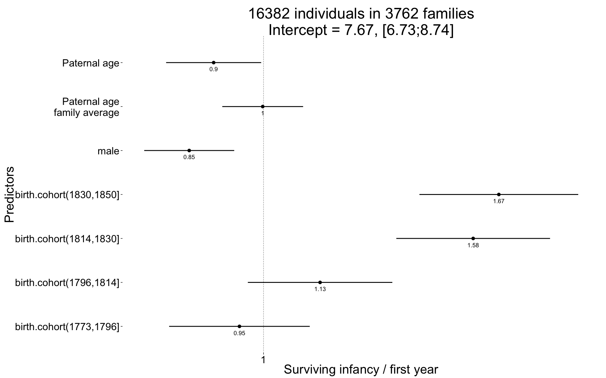
plot_residuals(Survive_infancy)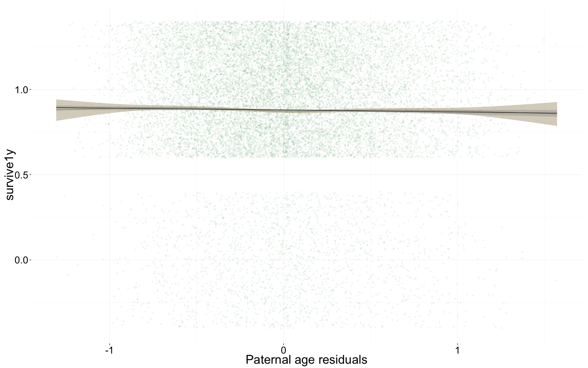
Survival to reproductive age
Survive_reproductive <- glmer(
surviveR ~ birth.cohort + male + paternalage.mean + paternalage.diff + (1|idParents),
data= krmh.1, subset = survive1y == TRUE & byear < 1845,
family = 'binomial', control = control_defaults)
summary(Survive_reproductive)## Generalized linear mixed model fit by maximum likelihood (Laplace
## Approximation) [glmerMod]
## Family: binomial ( logit )
## Formula:
## surviveR ~ birth.cohort + male + paternalage.mean + paternalage.diff +
## (1 | idParents)
## Data: krmh.1
## Control: control_defaults
## Subset: survive1y == TRUE & byear < 1845
##
## AIC BIC logLik deviance df.resid
## 12217 12285 -6099 12199 13659
##
## Scaled residuals:
## Min 1Q Median 3Q Max
## -2.839 0.342 0.394 0.451 0.771
##
## Random effects:
## Groups Name Variance Std.Dev.
## idParents (Intercept) 0.268 0.518
## Number of obs: 13668, groups: idParents, 3520
##
## Fixed effects:
## Estimate Std. Error z value Pr(>|z|)
## (Intercept) 1.41827 0.05965 23.77 < 2e-16 ***
## birth.cohort(1773,1796] 0.05391 0.07259 0.74 0.458
## birth.cohort(1796,1814] 0.34879 0.07523 4.64 3.5e-06 ***
## birth.cohort(1814,1830] 0.46403 0.07619 6.09 1.1e-09 ***
## birth.cohort(1830,1850] 0.66454 0.08787 7.56 3.9e-14 ***
## male 0.01178 0.04768 0.25 0.805
## paternalage.mean 0.00787 0.04281 0.18 0.854
## paternalage.diff -0.08470 0.05054 -1.68 0.094 .
## ---
## Signif. codes: 0 '***' 0.001 '**' 0.01 '*' 0.05 '.' 0.1 ' ' 1
##
## Correlation of Fixed Effects:
## (Intr) b.(177 b.(179 b.(181 b.(183 male ptrnlg.m
## b.(1773,179 -0.606
## b.(1796,181 -0.587 0.488
## b.(1814,183 -0.587 0.467 0.476
## b.(1830,185 -0.505 0.409 0.405 0.418
## male -0.420 0.009 0.002 0.022 0.011
## paternlg.mn 0.029 -0.065 -0.055 -0.028 -0.053 -0.003
## patrnlg.dff 0.069 -0.053 -0.055 -0.064 -0.111 0.009 0.017Survive_reproductive_coefs = fortify_mine(Survive_reproductive)
plot_fortified_mer(Survive_reproductive_coefs, "Surviving to reproductive age / 15 years")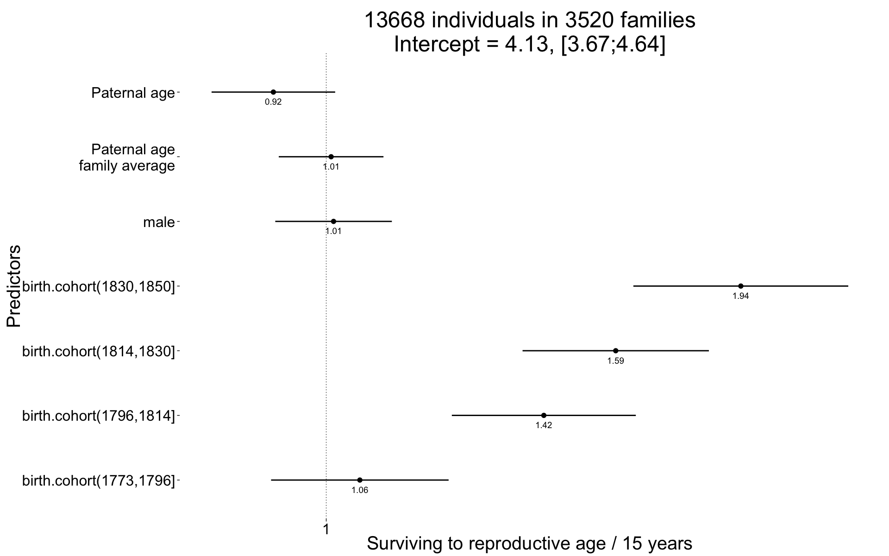
plot_residuals(Survive_reproductive)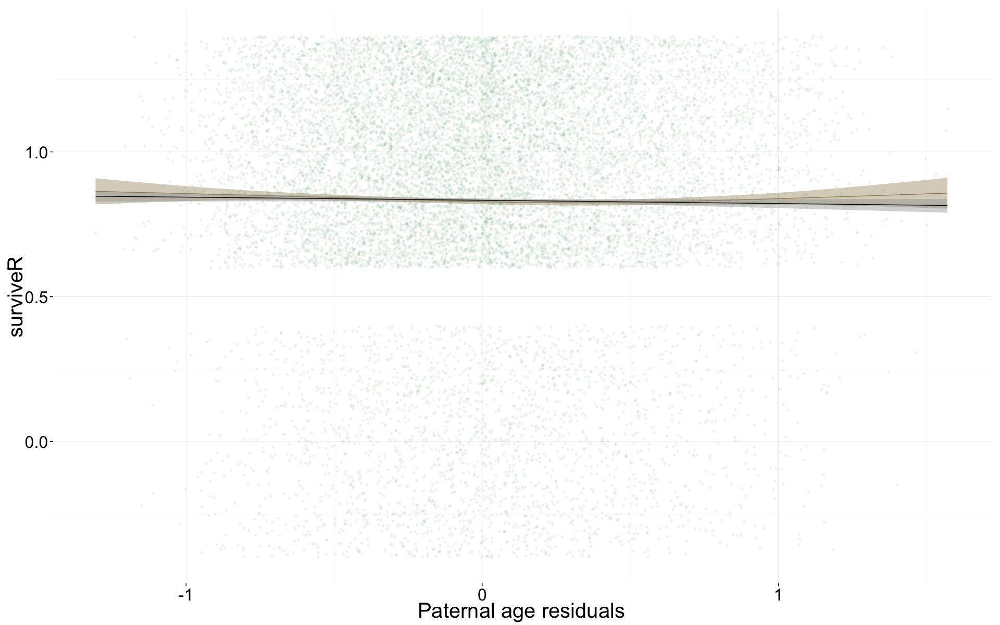
Ever married
Ever_married <- glmer(
ever_married ~ birth.cohort + male + paternalage.mean + paternalage.diff + (1|idParents),
data= krmh.1, subset = surviveR == T & byear < 1835,
family = 'binomial', control = control_defaults )
summary(Ever_married)## Generalized linear mixed model fit by maximum likelihood (Laplace
## Approximation) [glmerMod]
## Family: binomial ( logit )
## Formula:
## ever_married ~ birth.cohort + male + paternalage.mean + paternalage.diff +
## (1 | idParents)
## Data: krmh.1
## Control: control_defaults
## Subset: surviveR == T & byear < 1835
##
## AIC BIC logLik deviance df.resid
## 12998 13063 -6490 12980 10099
##
## Scaled residuals:
## Min 1Q Median 3Q Max
## -2.137 -1.010 0.560 0.724 1.655
##
## Random effects:
## Groups Name Variance Std.Dev.
## idParents (Intercept) 0.377 0.614
## Number of obs: 10108, groups: idParents, 3106
##
## Fixed effects:
## Estimate Std. Error z value Pr(>|z|)
## (Intercept) 0.1696 0.0558 3.04 0.0024 **
## birth.cohort(1773,1796] 0.4907 0.0704 6.97 3.2e-12 ***
## birth.cohort(1796,1814] 0.7281 0.0704 10.34 < 2e-16 ***
## birth.cohort(1814,1830] 0.9782 0.0715 13.69 < 2e-16 ***
## birth.cohort(1830,1850] 0.9373 0.1110 8.45 < 2e-16 ***
## male -0.4447 0.0451 -9.86 < 2e-16 ***
## paternalage.mean -0.0548 0.0416 -1.32 0.1873
## paternalage.diff -0.2298 0.0472 -4.87 1.1e-06 ***
## ---
## Signif. codes: 0 '***' 0.001 '**' 0.01 '*' 0.05 '.' 0.1 ' ' 1
##
## Correlation of Fixed Effects:
## (Intr) b.(177 b.(179 b.(181 b.(183 male ptrnlg.m
## b.(1773,179 -0.623
## b.(1796,181 -0.637 0.522
## b.(1814,183 -0.635 0.496 0.539
## b.(1830,185 -0.416 0.321 0.336 0.369
## male -0.426 -0.006 -0.022 -0.010 0.000
## paternlg.mn 0.032 -0.068 -0.060 -0.034 -0.021 0.006
## patrnlg.dff 0.086 -0.055 -0.062 -0.095 -0.105 0.019 0.008Ever_married_coefs = fortify_mine(Ever_married)
plot_fortified_mer(Ever_married_coefs, "Odds of ever marrying")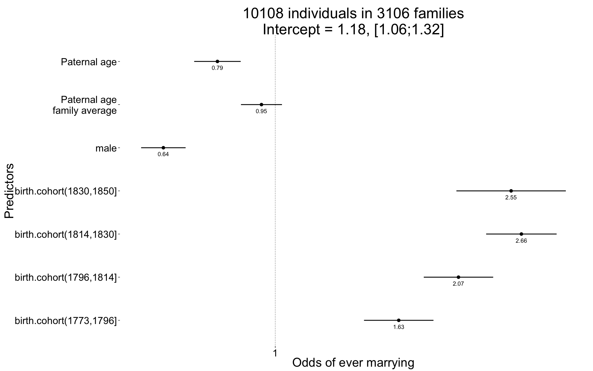
plot_residuals(Ever_married)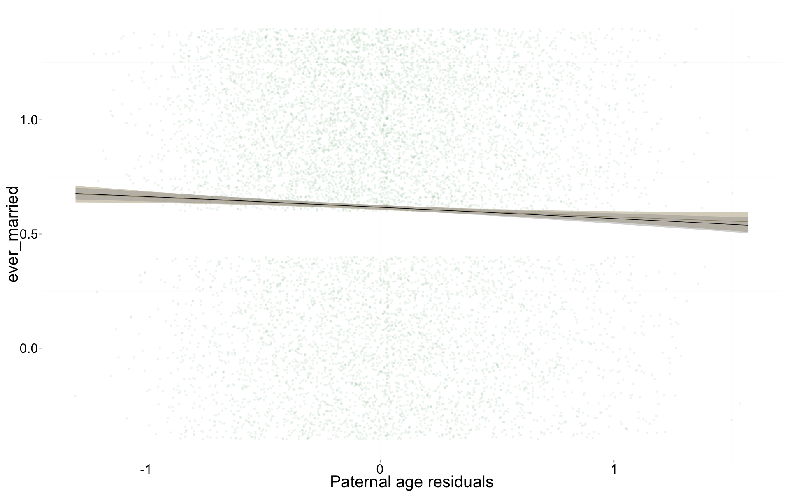
Number of children
Children <- glmer(
children ~ center(spouses)*male + birth.cohort + paternalage.mean + paternalage.diff + (1|idParents) + (1|idIndividu),
data= krmh.1, subset = spouses > 0 & byear < 1835,
family = 'poisson', control = control_defaults )
summary(Children)## Generalized linear mixed model fit by maximum likelihood (Laplace
## Approximation) [glmerMod]
## Family: poisson ( log )
## Formula:
## children ~ center(spouses) * male + birth.cohort + paternalage.mean +
## paternalage.diff + (1 | idParents) + (1 | idIndividu)
## Data: krmh.1
## Control: control_defaults
## Subset: spouses > 0 & byear < 1835
##
## AIC BIC logLik deviance df.resid
## 30633 30714 -15304 30609 6221
##
## Scaled residuals:
## Min 1Q Median 3Q Max
## -1.639 -0.729 0.115 0.493 1.189
##
## Random effects:
## Groups Name Variance Std.Dev.
## idIndividu (Intercept) 0.3169 0.563
## idParents (Intercept) 0.0144 0.120
## Number of obs: 6233, groups: idIndividu, 6233; idParents, 2660
##
## Fixed effects:
## Estimate Std. Error z value Pr(>|z|)
## (Intercept) 1.2138 0.0357 34.0 < 2e-16 ***
## center(spouses) 0.0798 0.0380 2.1 0.0359 *
## male -0.0253 0.0388 -0.7 0.5156
## birth.cohort(1773,1796] -0.0270 0.0318 -0.8 0.3966
## birth.cohort(1796,1814] -0.0980 0.0308 -3.2 0.0014 **
## birth.cohort(1814,1830] -0.1603 0.0303 -5.3 0.00000013 ***
## birth.cohort(1830,1850] -0.1915 0.0469 -4.1 0.00004471 ***
## paternalage.mean -0.0330 0.0175 -1.9 0.0600 .
## paternalage.diff -0.0496 0.0212 -2.3 0.0194 *
## center(spouses):male 0.2073 0.0514 4.0 0.00005484 ***
## ---
## Signif. codes: 0 '***' 0.001 '**' 0.01 '*' 0.05 '.' 0.1 ' ' 1
##
## Correlation of Fixed Effects:
## (Intr) cntr() male b.(177 b.(179 b.(181 b.(183 ptrnlg.m
## centr(spss) -0.690
## male -0.540 0.618
## b.(1773,179 -0.493 0.012 -0.016
## b.(1796,181 -0.511 0.023 -0.022 0.561
## b.(1814,183 -0.531 0.024 -0.017 0.565 0.593
## b.(1830,185 -0.338 0.006 -0.040 0.368 0.383 0.400
## paternlg.mn 0.008 0.008 0.002 -0.052 -0.044 -0.012 -0.001
## patrnlg.dff 0.069 -0.005 -0.002 -0.032 -0.047 -0.060 -0.083 0.005
## cntr(spss): 0.475 -0.738 -0.858 0.027 0.018 0.036 0.051 0.001
## ptrnlg.d
## centr(spss)
## male
## b.(1773,179
## b.(1796,181
## b.(1814,183
## b.(1830,185
## paternlg.mn
## patrnlg.dff
## cntr(spss): 0.012Children_coefs = fortify_mine(Children)
plot_fortified_mer(Children_coefs, "Nr. Children (of those who had at least one spouse")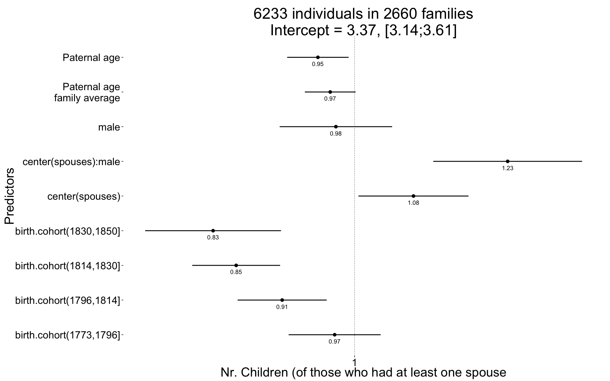
plot_residuals(Children)
Number of children surviving first year
Children.surviving1y <- glmer(
children.surviving1y ~ center(children.wddate) + birth.cohort + male +paternalage.mean + paternalage.diff + (1|idParents) + (1|idIndividu),
data= krmh.1, subset = children > 0 & byear < 1835,
family = 'poisson', control = control_defaults )## Warning in checkConv(attr(opt, "derivs"), opt$par, ctrl = control$checkConv, : Model is nearly unidentifiable: very large eigenvalue
## - Rescale variables?summary(Children.surviving1y)## Generalized linear mixed model fit by maximum likelihood (Laplace
## Approximation) [glmerMod]
## Family: poisson ( log )
## Formula: children.surviving1y ~ center(children.wddate) + birth.cohort +
## male + paternalage.mean + paternalage.diff + (1 | idParents) +
## (1 | idIndividu)
## Data: krmh.1
## Control: control_defaults
## Subset: children > 0 & byear < 1835
##
## AIC BIC logLik deviance df.resid
## 17153 17226 -8566 17131 5300
##
## Scaled residuals:
## Min 1Q Median 3Q Max
## -5.666 -0.476 0.055 0.538 2.078
##
## Random effects:
## Groups Name Variance Std.Dev.
## idIndividu (Intercept) 0 0
## idParents (Intercept) 0 0
## Number of obs: 5311, groups: idIndividu, 5311; idParents, 2513
##
## Fixed effects:
## Estimate Std. Error z value Pr(>|z|)
## (Intercept) 0.452399 0.021979 20.6 < 2e-16 ***
## center(children.wddate) 0.213197 0.002439 87.4 < 2e-16 ***
## birth.cohort(1773,1796] 0.047586 0.021643 2.2 0.02790 *
## birth.cohort(1796,1814] 0.078953 0.021652 3.6 0.00027 ***
## birth.cohort(1814,1830] -0.087375 0.024559 -3.6 0.00037 ***
## birth.cohort(1830,1850] -0.485499 0.052164 -9.3 < 2e-16 ***
## male -0.000982 0.015341 -0.1 0.94895
## paternalage.mean 0.000705 0.013025 0.1 0.95685
## paternalage.diff -0.007361 0.016444 -0.4 0.65440
## ---
## Signif. codes: 0 '***' 0.001 '**' 0.01 '*' 0.05 '.' 0.1 ' ' 1
##
## Correlation of Fixed Effects:
## (Intr) cnt(.) b.(177 b.(179 b.(181 b.(183 male ptrnlg.m
## cntr(chld.) -0.578
## b.(1773,179 -0.565 0.029
## b.(1796,181 -0.608 0.121 0.546
## b.(1814,183 -0.641 0.262 0.485 0.509
## b.(1830,185 -0.303 0.132 0.229 0.241 0.234
## male -0.334 -0.059 0.037 0.001 0.033 -0.001
## paternlg.mn -0.009 0.028 -0.046 -0.035 0.011 0.005 0.014
## patrnlg.dff 0.048 0.044 -0.023 -0.035 -0.027 -0.040 0.016 0.012Children.surviving1y_coefs = fortify_mine(Children.surviving1y)
plot_fortified_mer(Children.surviving1y_coefs, "Nr. Children who survive first year (of those who survived infancy")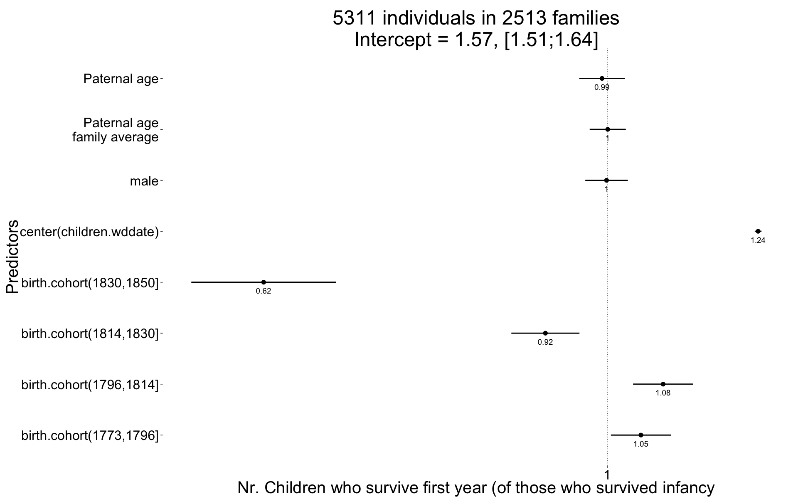
plot_residuals(Children.surviving1y)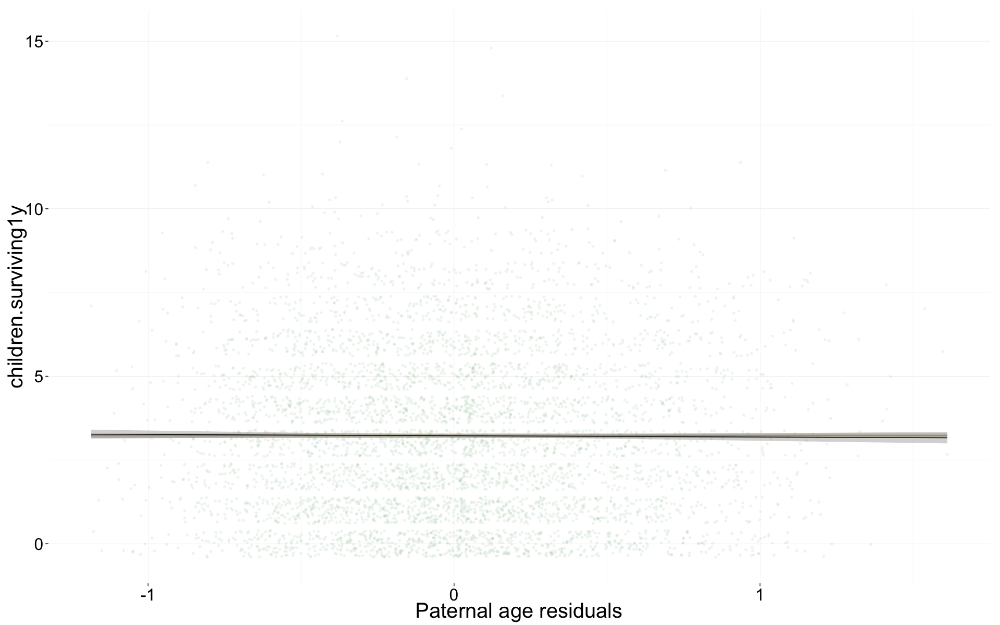
Number of grandchildren
Grandchildren.per.Child <- glmer(
grandchildren ~ center(children) + birth.cohort + male +paternalage.mean + paternalage.diff + (1|idParents) + (1|idIndividu),
data= krmh.1, subset = children > 0 & byear < 1810,
family = 'poisson', control = control_defaults )
summary(Grandchildren.per.Child)## Generalized linear mixed model fit by maximum likelihood (Laplace
## Approximation) [glmerMod]
## Family: poisson ( log )
## Formula:
## grandchildren ~ center(children) + birth.cohort + male + paternalage.mean +
## paternalage.diff + (1 | idParents) + (1 | idIndividu)
## Data: krmh.1
## Control: control_defaults
## Subset: children > 0 & byear < 1810
##
## AIC BIC logLik deviance df.resid
## 19283 19337 -9632 19265 3119
##
## Scaled residuals:
## Min 1Q Median 3Q Max
## -1.502 -0.626 0.058 0.221 0.596
##
## Random effects:
## Groups Name Variance Std.Dev.
## idIndividu (Intercept) 1.0154 1.008
## idParents (Intercept) 0.0705 0.266
## Number of obs: 3128, groups: idIndividu, 3128; idParents, 1608
##
## Fixed effects:
## Estimate Std. Error z value Pr(>|z|)
## (Intercept) 0.75878 0.05379 14.11 < 2e-16 ***
## center(children) 0.24758 0.00807 30.68 < 2e-16 ***
## birth.cohort(1773,1796] 0.13146 0.05177 2.54 0.011 *
## birth.cohort(1796,1814] -0.31198 0.05559 -5.61 0.00000002 ***
## male -0.03741 0.04220 -0.89 0.375
## paternalage.mean -0.03569 0.03724 -0.96 0.338
## paternalage.diff -0.00378 0.04593 -0.08 0.934
## ---
## Signif. codes: 0 '***' 0.001 '**' 0.01 '*' 0.05 '.' 0.1 ' ' 1
##
## Correlation of Fixed Effects:
## (Intr) cntr() b.(177 b.(179 male ptrnlg.m
## cntr(chldr) -0.559
## b.(1773,179 -0.560 0.041
## b.(1796,181 -0.509 0.036 0.521
## male -0.362 -0.053 0.021 -0.011
## paternlg.mn 0.021 0.007 -0.075 -0.063 0.014
## patrnlg.dff 0.098 0.002 -0.043 -0.070 0.004 0.012Grandchildren.per.Child_coefs = fortify_mine(Grandchildren.per.Child)
plot_fortified_mer(Grandchildren.per.Child_coefs, "Nr. of grandchildren per child")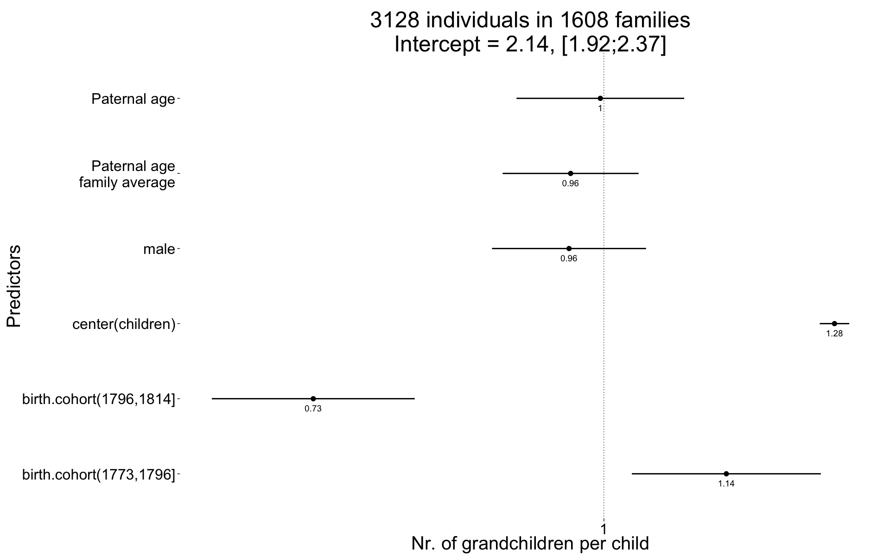
plot_residuals(Grandchildren.per.Child)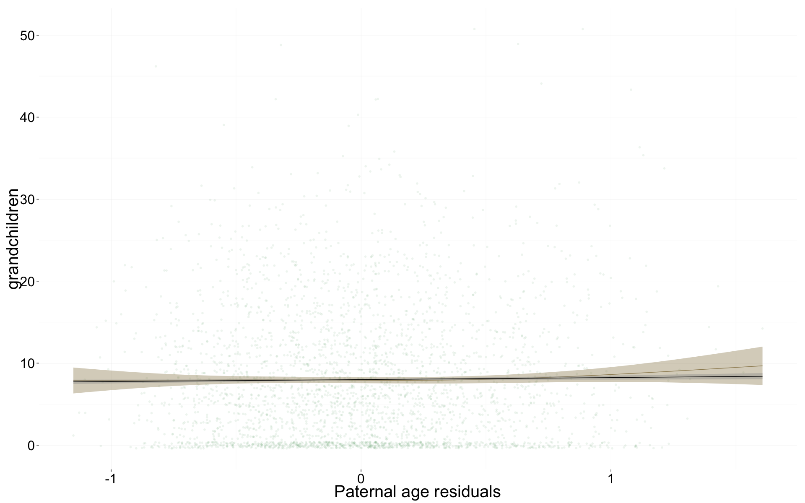
Any surviving children
Any_surviving_children <- glmer(
any_surviving_children ~ birth.cohort + male + paternalage.mean + paternalage.diff + (1|idParents),
data= krmh.1, subset = byear < 1835,
family = 'binomial', control = control_defaults )
summary(Any_surviving_children)## Generalized linear mixed model fit by maximum likelihood (Laplace
## Approximation) [glmerMod]
## Family: binomial ( logit )
## Formula:
## any_surviving_children ~ birth.cohort + male + paternalage.mean +
## paternalage.diff + (1 | idParents)
## Data: krmh.1
## Control: control_defaults
## Subset: byear < 1835
##
## AIC BIC logLik deviance df.resid
## 16775 16843 -8379 16757 13980
##
## Scaled residuals:
## Min 1Q Median 3Q Max
## -1.098 -0.653 -0.561 1.212 3.134
##
## Random effects:
## Groups Name Variance Std.Dev.
## idParents (Intercept) 0.216 0.464
## Number of obs: 13989, groups: idParents, 3266
##
## Fixed effects:
## Estimate Std. Error z value Pr(>|z|)
## (Intercept) -1.0065 0.0487 -20.66 < 2e-16 ***
## birth.cohort(1773,1796] 0.3857 0.0599 6.44 1.2e-10 ***
## birth.cohort(1796,1814] 0.4731 0.0597 7.93 2.3e-15 ***
## birth.cohort(1814,1830] 0.1300 0.0614 2.12 0.034 *
## birth.cohort(1830,1850] -0.7468 0.1175 -6.35 2.1e-10 ***
## male -0.1998 0.0388 -5.15 2.6e-07 ***
## paternalage.mean -0.0447 0.0351 -1.27 0.203
## paternalage.diff -0.2397 0.0415 -5.77 7.9e-09 ***
## ---
## Signif. codes: 0 '***' 0.001 '**' 0.01 '*' 0.05 '.' 0.1 ' ' 1
##
## Correlation of Fixed Effects:
## (Intr) b.(177 b.(179 b.(181 b.(183 male ptrnlg.m
## b.(1773,179 -0.654
## b.(1796,181 -0.670 0.549
## b.(1814,183 -0.665 0.519 0.550
## b.(1830,185 -0.349 0.272 0.280 0.294
## male -0.398 0.000 -0.003 0.024 0.017
## paternlg.mn 0.034 -0.067 -0.054 -0.026 -0.016 0.001
## patrnlg.dff 0.101 -0.051 -0.058 -0.076 -0.065 0.018 0.011Any_surviving_children_coefs = fortify_mine(Any_surviving_children)
plot_fortified_mer(Any_surviving_children_coefs, "Any surviving children")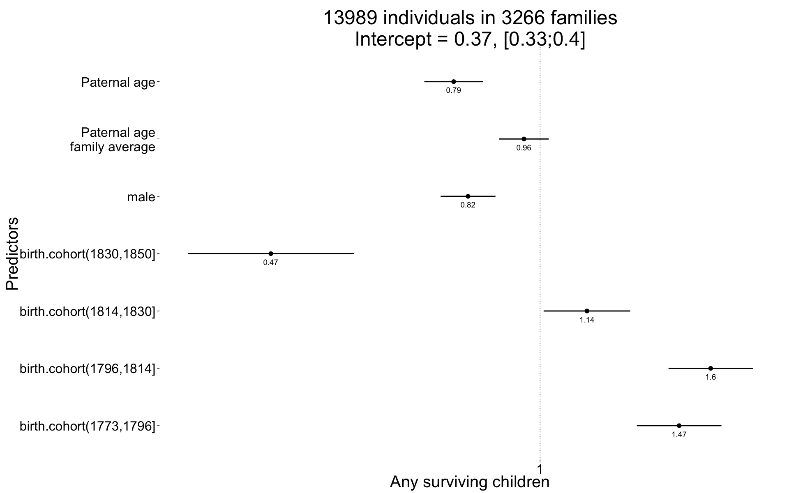
plot_residuals(Any_surviving_children)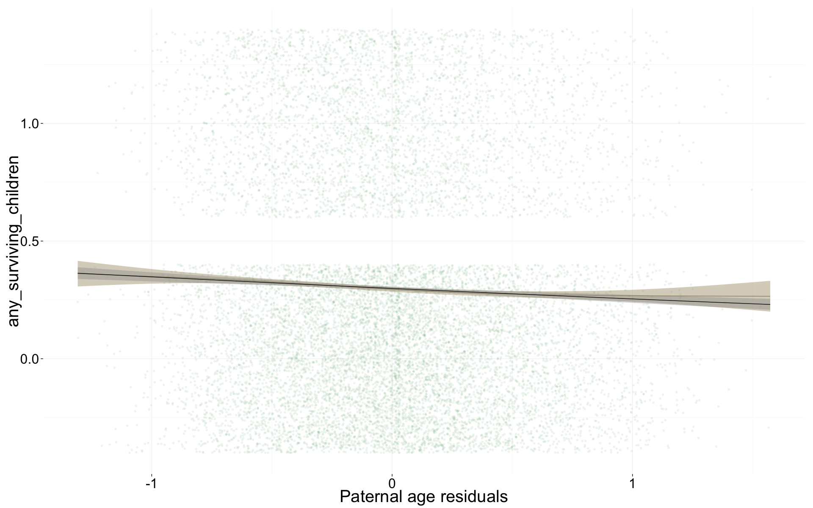
Wrap up
Save coefficients
name = "krmh_main_effects"
save(list = lstype('confint.merMod'),file=paste0("coefs/",name,"_coefs.rdata"))
save(list = lstype(),file=paste0("coefs/",name,"_models.rdata"))Session Info
sessionInfo()## R version 3.1.3 (2015-03-09)
## Platform: x86_64-apple-darwin13.4.0 (64-bit)
## Running under: OS X 10.10.2 (Yosemite)
##
## locale:
## [1] en_US.UTF-8/en_US.UTF-8/en_US.UTF-8/C/en_US.UTF-8/en_US.UTF-8
##
## attached base packages:
## [1] grid graphics grDevices utils datasets stats methods
## [8] base
##
## other attached packages:
## [1] MCMCglmm_2.22 ape_3.2 coda_0.17-1 pipeR_0.6
## [5] htmltools_0.2.6 XML_3.98-1.1 gridSVG_1.4-3 extrafont_0.17
## [9] lmerTest_2.0-20 blme_1.0-2 lme4_1.1-7 Rcpp_0.11.5
## [13] Matrix_1.1-5 zoo_1.7-11 foreign_0.8-63 mgcv_1.8-4
## [17] nlme_3.1-120 haven_0.1.1.9000 QuantPsyc_1.5 MASS_7.3-39
## [21] boot_1.3-15 psych_1.5.1 Hmisc_3.15-0 Formula_1.2-0
## [25] survival_2.38-1 lattice_0.20-30 reshape2_1.4.1 lubridate_1.3.3
## [29] car_2.0-25 stringi_0.4-1 dplyr_0.4.1 pander_0.5.2
## [33] knitr_1.9 rmarkdown_0.5.1 plyr_1.8.1 ggplot2_1.0.0
## [37] formr_0.1.11 data.table_1.9.5 stringr_0.6.2 devtools_1.7.0
##
## loaded via a namespace (and not attached):
## [1] acepack_1.3-3.3 assertthat_0.1 bitops_1.0-6
## [4] caTools_1.17.1 chron_2.3-45 cluster_2.0.1
## [7] codetools_0.2-10 colorspace_1.2-5 corpcor_1.6.7
## [10] cubature_1.1-2 DBI_0.3.1 digest_0.6.8
## [13] evaluate_0.5.5 extrafontdb_1.0 formatR_1.0
## [16] formula.tools_1.3.4 gdata_2.13.3 gplots_2.16.0
## [19] gtable_0.1.2 gtools_3.4.1 KernSmooth_2.23-14
## [22] labeling_0.3 latticeExtra_0.6-26 lazyeval_0.1.10
## [25] magrittr_1.5 memoise_0.2.1 minqa_1.2.4
## [28] mnormt_1.5-1 munsell_0.4.2 nloptr_1.0.4
## [31] nnet_7.3-9 numDeriv_2012.9-1 operator.tools_1.3.0
## [34] parallel_3.1.3 pbkrtest_0.4-2 proto_0.3-10
## [37] quantreg_5.11 RColorBrewer_1.1-2 RJSONIO_1.3-0
## [40] rpart_4.1-9 Rttf2pt1_1.3.3 scales_0.2.4
## [43] SparseM_1.6 splines_3.1.3 tcltk_3.1.3
## [46] tensorA_0.36 tools_3.1.3date()## [1] "Mon Mar 30 18:14:20 2015"